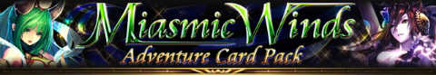

Time Period (ET): 9 PM Nov. 5th, 2013 to 8 PM Nov. 12th, 2013
When you purchase the Adventure card pack, you'll get at least one mile for each card. You will get distance rewards based on how many miles you have traveled. The number of miles you'll get for each card is random
After you reach 200 miles you'll start your second cycle. Any leftover miles will be carried over to your second cycle.
- Once you reach 200 miles, the card pack will return to its original price.
- Distance rewards are automatically sent to your Presents screen once you travel enough miles.
- At the 200-mile point, you'll receive either the Legend Card Empyrean Wind God or the Legend card Baal.
- The card pack animation may not appear, depending on server response time and the statues of your network connection. Check your Presents, as cards and items will still be correctly credited to your account.
- When Grand Adventure activates, the miles you get will be multiplied by 1.5
- The next mile reward will be upgraded (excluding the 5,10,30,90,120,160, and 200-mile rewards) if divine powers activate
New Cards[edit]
|
Empyrean Wind God
Legend (PWR: 37)
ATK: 5,180
DEF: 4,920
Skill: Unworldly boost to man/gods ATK (23 %)
Event Skill: Unworldly boost to damage against Beastly Terrors in Egg of Decimation / Big boost to damage against other raid bosses
|
|
|
Baal
Legend (PWR: 37)
ATK: 5,300
DEF: 4,800
Skill: Unworldly hit to foe's DEF (all) (20 %)
|
|
|
Spinaria
SS Rare (PWR: 34)
ATK: 4,040
DEF: 4,810
Skill: Massive boost to man/demons DEF (18 %)
Event Skill: Massive boost to damage against Beastly Terrors in Egg of Decimation / Big boost to damage against other raid bosses
|
|
|
Grigori
S Rare (PWR: 29)
ATK: 3,040
DEF: 4,210
Skill: Great boost to gods/demons ATK/DEF (10 %)
Event Skill: Great boost to damage against Beastly Terrors in Egg of Decimation / Medium boost to damage against other raid bosses
|
|
|
Sylph Caster
High Rare (PWR: 26)
ATK: 3,650
DEF: 2,620
Skill: Big hit to foe's to man/gods DEF
Event Skill: Big boost to damage against Beastly Terrors in Egg of Decimation / Medium boost to damage against other raid bosses
|
|
|
Pegaea
Rare (PWR: 20)
ATK: 1,900
DEF: 2,600
Skill: Medium boost to man/gods DEF (8 %)
Event Skill: Medium boost to damage against Beastly Terrors in Egg of Decimation / Small boost to damage against other raid bosses
|
|
Distance Rewards[edit]
- 5-Mile Reward
- Metallic Powder x 10
- 10-Mile Reward
- Sylph Caster
- 20-Mile Reward
- Cure Water x 10
- 30-Mile Reward
- Grigori
- 40-Mile Reward
- Metallic Powder x 15
- 60-Mile Reward
- Devil Princess x 4
- 90-Mile Reward
- Grigori
- 100-Mile Reward
- Metallic Powder x 20
- 120-Mile Reward
- Spinaria
- 150-Mile Reward
- Metallic Powder x 30
- 160-Mile Reward
- Grigori
- 180-Mile Reward
- Devil Princess x 8
- 200-Mile Reward
- Baal or Empyrean Wind God